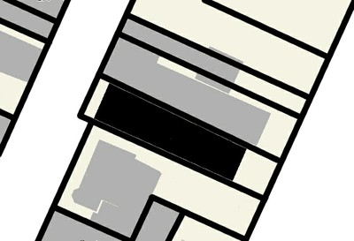
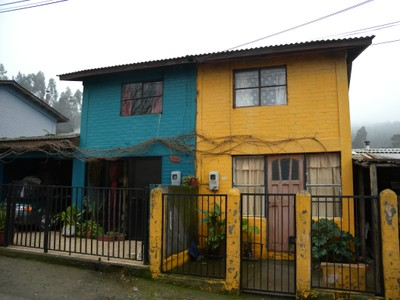

Edificios adjuntos a un lado [BP1]
El edificio tiene edificios adjuntos a un lado; esto incluye edificios de esquina (edificios al final de una manzana) y edificios semi adosados (con dos unidades de vivienda).

El edificio que se muestra en negro en esta vista en planta tiene un edificio contiguo a un lado.

Un ejemplo de un edificio dentro de un bloque con los edificios adyacentes en un lado, Vancouver, Canada (left photo: S. Brzev, right: Map data ©2013 Google, DigitalGlobe)

Semi-adosado unifamiliar , edificio contiguo a un lado , Nueva Zelanda ( L. Allen).

Casa adosada, edificio contiguo a un lado, Constitución, Chile (S. Brzev).
Un edificio en una esquina, con un edificio anexo, por un lado, Seattle, EE.UU. ( S. Brzev ).